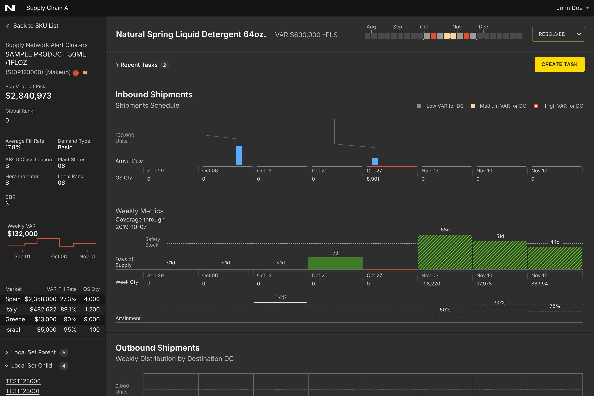
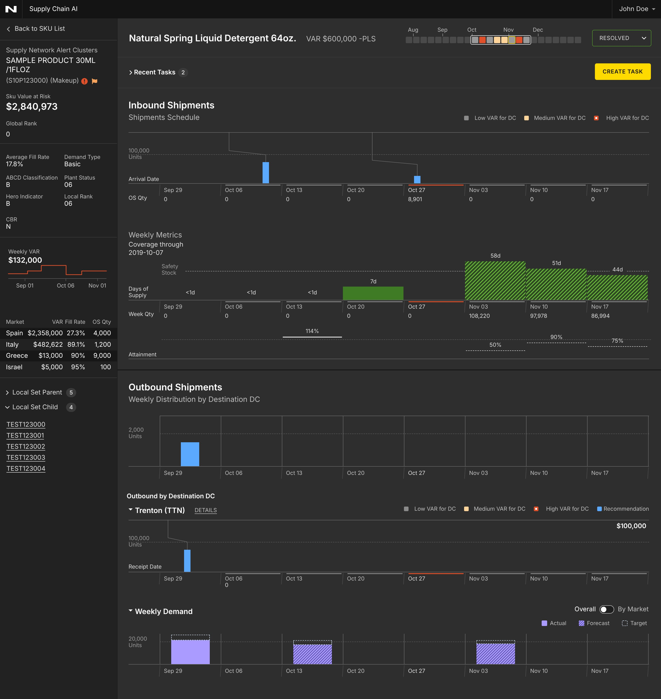
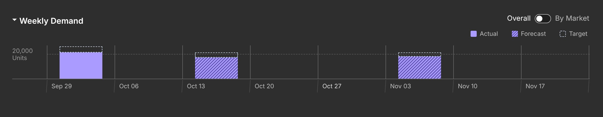
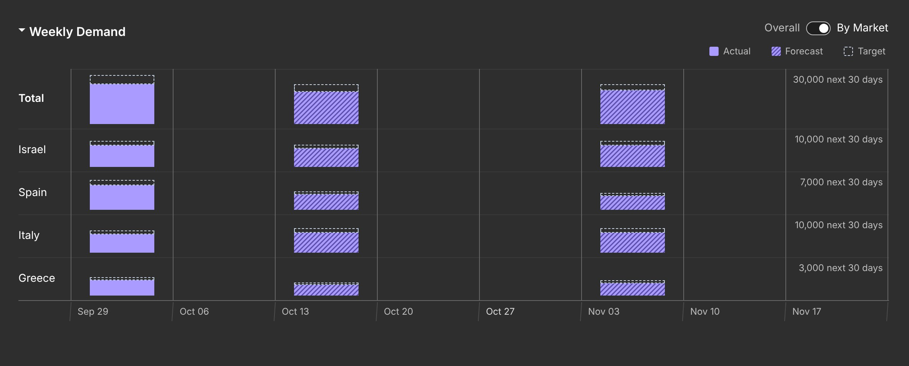
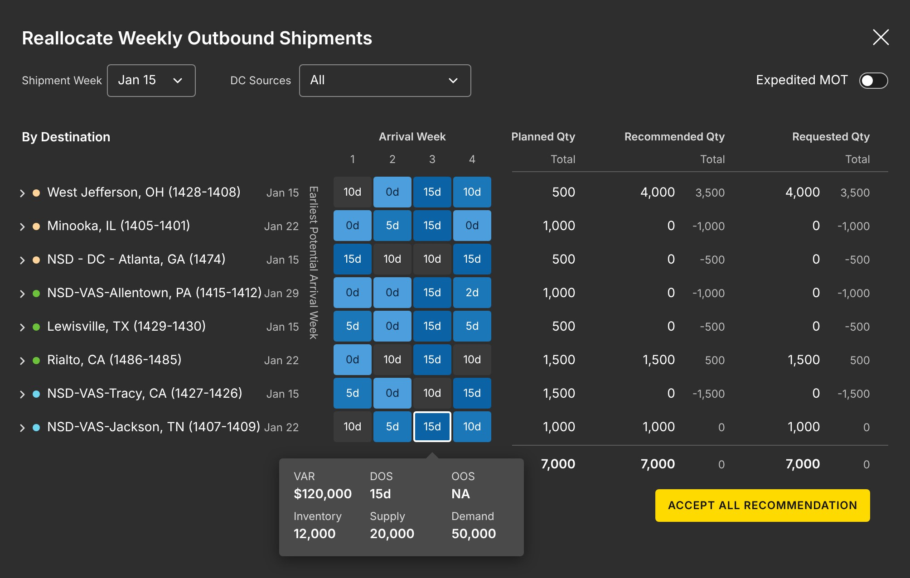
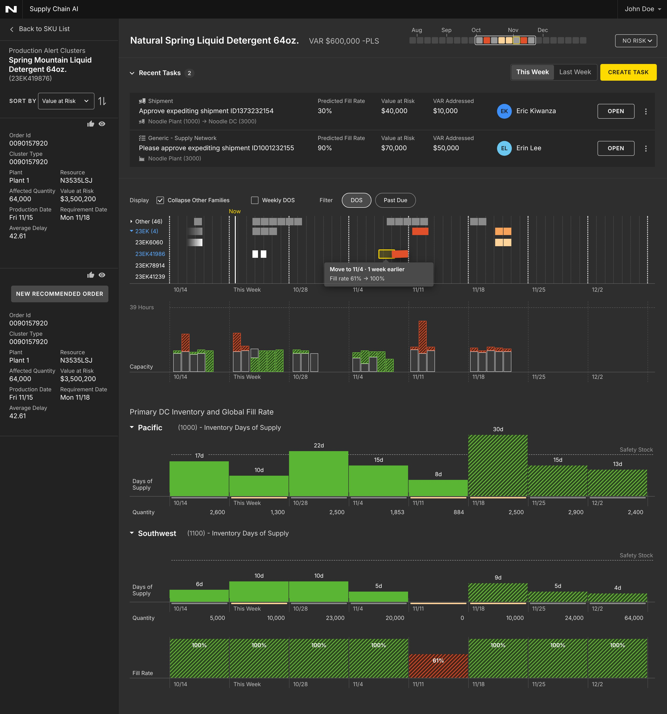
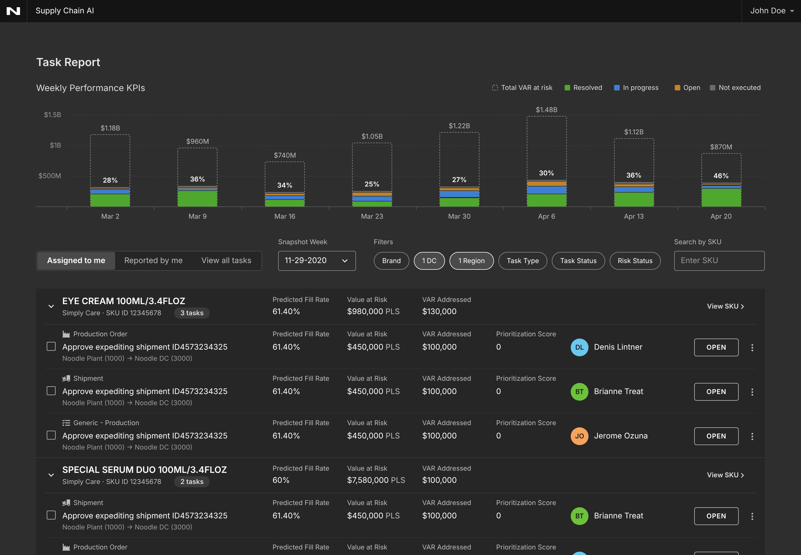

Inventory Flow
At Noodle.ai, I redesigned Inventory Flow, an AI supply chain product that spots supply and demand imbalances, puts a dollar figure on the risk, and recommends what to do about it. I owned the Supply Network and Production products, gave them one visual language, and added a task flow so decisions get assigned in the app instead of over email.

Inventory Flow already knew where supply and demand were out of step. It could find an imbalance, size it as Value at Risk (VAR), and recommend a fix. The hard part was everything after that: a planner had to read weeks of numbers, decide whether to trust the recommendation, act on it, and then tell someone.
Supply Network and Production answered different questions, but planners moved between them all day. They needed to read like one system, and the work needed to stay in one place.
The model knew what to do. People still had to trust it, act on it, and tell someone.
How might we make a wall of weekly numbers readable at a glance, and get from a recommendation to a decision without leaving the app?
- Everything happens by the week. Supply, demand, days of supply, shipments and orders all play out week by week. So a shared week grid became the backbone: every chart on a screen lines up to it, and a 24-week strip in the title shows risk before you scroll.
- Moving through the weeks took too long. Before the redesign, people had to click the right or left arrow over and over to move the charts week by week. For a planner chasing one problem week, that was slow. I added the 24-week strip to the title so they can go straight to the week they need.
- Real and predicted values had to look different. A number that already happened looks a lot like one that is only planned or forecast, and mixing them up is dangerous in a planning tool. So the difference had to be visible without reading a label.
- Color had to carry meaning. With this many charts, a color that means one thing on one screen and something else on the next gets misread. I decided what each color means once, then held to it.
- Planners work by market. A client asked to see both the overall picture and each market, because so many planners are responsible for just one. We needed both views, one tap apart.
- The handoff left the app. Someone spotted a problem in the product, then assigned the fix over email. That is where context gets lost, so assignment needed to live next to the alert.
I defined the system for the whole redesign, so every screen reads the same way. Three line and fill patterns say how certain a value is. Each color has one job.
One color, one meaning. If a planner sees blue, it is stock moving through the network. If they see purple, it is what customers want.
Four parts of the product changed. Each one reuses the same grid, colors and patterns.
One screen from alert to action. The 24-week strip in the title shows where risk is coming, and it is also the fastest way to move around: pick a week to jump there, instead of stepping through the charts with the arrows. Below it, inbound shipments, weekly metrics and outbound shipments share the same week columns, so a planner can read straight down a single week.

Demand shows overall by default, with a toggle for By Market. I tried stacking the markets in one bar, but only the bottom slice sits on a flat line, so it was hard to compare them. Instead, each market gets its own short row on the same weeks and the same scale.


I redesigned the modal for moving outbound shipments. Arrival weeks by destination sit in one heatmap, and planned, recommended and requested quantities line up side by side with the difference. One button accepts the recommendation.

Production uses the same week grid. I added DOS and Past Due filters, and designed how orders move on the chart: lift an order, drag it to the recommended week, see the fill rate change before it lands, and undo if it was wrong.

Anyone can turn an alert into a task and assign it right where they found it. The Task Report rolls it all up, with weekly performance showing the total VAR against how much has been addressed, split by status.

The by-market view was the one decision with real trade-offs. Here is how the two options compared:
Every market sits on the same baseline and the same scale, so you can compare them and follow one across weeks. A planner who owns one market can focus on their row.
It takes more vertical space, so the section grows taller than the overall view.
Compact, and good at showing how each market adds up to the total.
Only the bottom slice sits on a flat line. The rest float, which makes comparing markets or tracking one over time hard, and it needs a color per market.
This is an older project, so I don't have formal metrics to share. What I can point to is the system it left behind: one grid, one set of colors, and one way to show what is real and what is predicted, applied across Supply Network, Production and Tasks.
A chart full of predictions is only trustworthy if you can tell, at a glance, what already happened and what is a guess. Making that difference visible, and giving every color one job, did more for the product than any single screen.